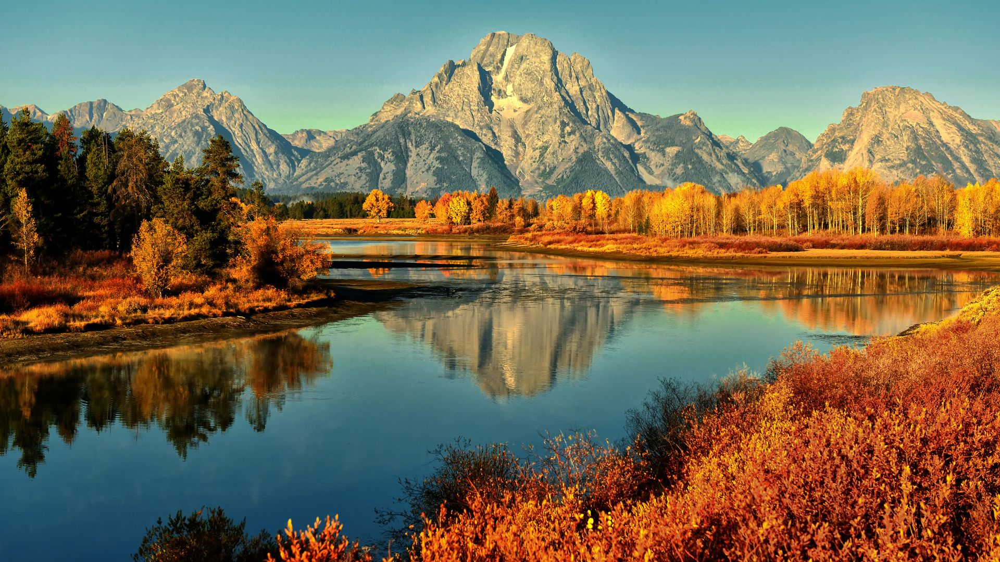

Fall is one of the four temperate seasons. Outside the tropics, autumn marks the transition from summer to winter, in September (Northern Hemisphere) or March (Southern Hemisphere). Autumn is the season when the duration of daylight becomes noticeably shorter and the temperature cools considerably. Day length decreases and night length increases as the season progresses until the Winter Solstice in December (Northern Hemisphere) and June (Southern Hemisphere). One of its main features in temperate climates is the striking change in colour for the leaves of deciduous trees as they prepare to shed.
Some cultures regard the autumnal equinox as "mid-autumn", while others with a longer temperature lag treat the equinox as the start of autumn. In the English-speaking world, autumn traditionally began with Lammas Day and ended around Hallowe'en, the approximate mid-points between midsummer, the autumnal equinox, and midwinter.